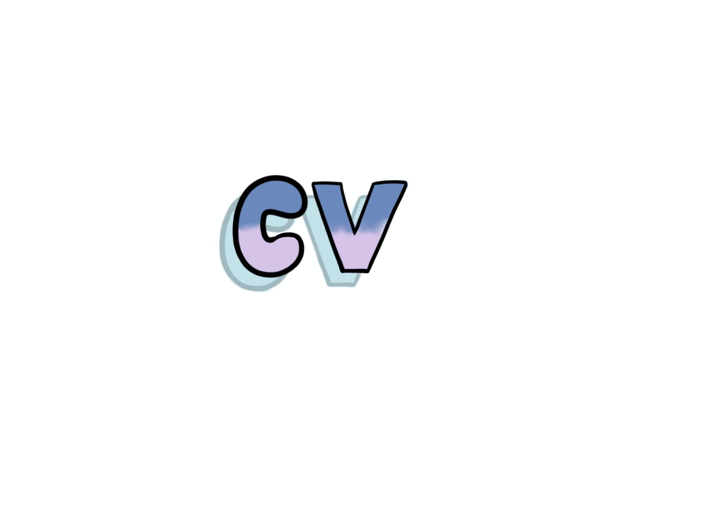
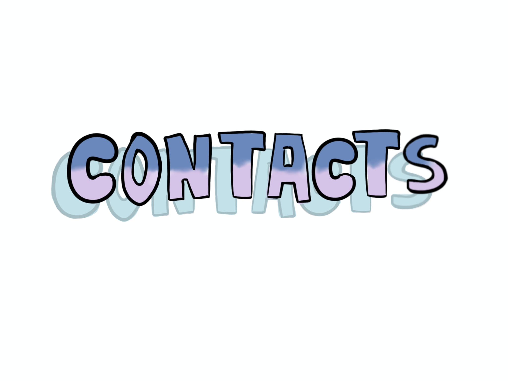

Hello, I'm Marta Almeida (Lisbon, 2005). I am a Multimedia and Visual Artist.
I am currently finishing the third year of my degree in Fine Arts and Multimedia at the University of Évora. My artistic work stems from my academic background and the various areas of multimedia I have explored. My goal is to merge digital and visual art, applying my knowledge in 2D and 3D animation, stop motion, 3D printing, video, and photography.




